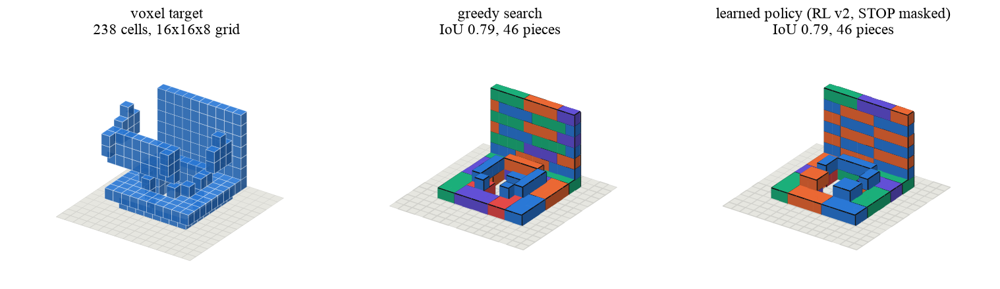
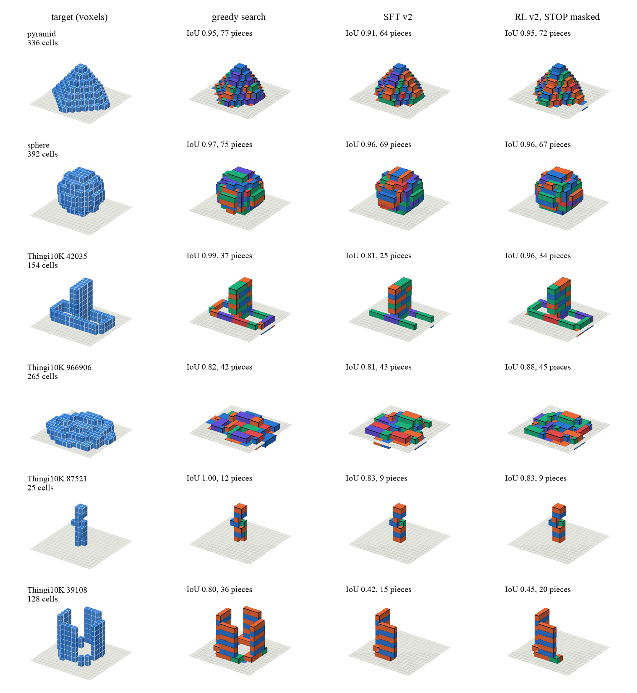

A 3D model goes in. A parts list, step-by-step brick instructions and an honest check come out.
TL;DR. BrickForge takes a 3D mesh and turns it into a LEGO-style brick model that would hold together: it snaps the shape onto a grid of studs, picks bricks from a six-piece catalogue, makes sure every brick rests on something and that the whole thing is one connected object, works out an assembly order, and runs a simple physics check on every step. Three different "brains" can choose the bricks: a hand-written search, a small neural network trained to imitate that search, and the same network improved with reinforcement learning. On 53 held-out shapes, the learned network ends up within a hair of the hand-written search (0.693 vs 0.705 on a 0-to-1 fidelity score), with the same number of valid and stable builds, and it runs in under a fifth of a second per shape on a laptop. Two things did not work, and the page says so.
You give it a closed 3D model, a .stl or .glb file, and a piece budget. It gives you back a folder: every brick with its position, the order to put them on, a parts list you could shop from, a file you can open in LEGO design software, and a verdict. The verdict is one of four plain words. Validated means every check passed. Partial means the build is legal but covers less than 80% of the shape. No valid candidate means no legal build was found. Failed means the input itself was rejected, for example a mesh with a hole in it. BrickForge never invents a build to hide a failure.

You need uv and about a minute. No GPU. The demo builds a sphere, then deliberately feeds in a broken mesh so you can see what a refusal looks like, then builds the sphere again with the learned network (that last step needs make setup-ml, which adds PyTorch).
git clone https://github.com/yogyam/BrickForge.git && cd BrickForge
make setup
make demoThen point it at your own model: ./bf generate --mesh model.stl --out runs/mine --max-pieces 120. The walkthrough explains every output file and every option.
This is the same viewer that ships with the code, loading a real example build. Drag to turn it, scroll to zoom, and use the slider or the arrow keys to add one brick at a time. The small blue dots are the cells of the target shape, so you can see where the build falls short. The line under the buttons says whether each partial build is stable under the force model.
Steps 3 to 6 are the same for all three methods. Only step 2 changes, which is what makes the comparison fair.
The hand-written search works layer by layer from the ground up and always grabs the brick that covers the most still-empty cells, preferring the hard-to-reach ones. It is deterministic and fast, and it is the baseline.
The learned network is tiny by today's standards: about 100,000 parameters, where a small language model has billions. It looks at the grid, the bricks placed so far and the list of legal next placements, and scores each placement. It was trained in two stages. First it learned to imitate the search's choices on about a thousand real meshes and a set of synthetic shapes ("imitation", or SFT). Then it was fine-tuned with reinforcement learning: it built shapes on its own, was rewarded for how well the finished build matched the target, and nudged its scoring accordingly (we use PPO, a standard recipe). The whole thing trained in about three hours on a laptop.
All three were run on the same 53 held-out shapes, 13 simple procedural ones and 40 Creative Commons meshes from Thingi10K, at budgets of 50, 100 and 200 bricks. The score is IoU, intersection over union: how many cells the build and the target have in common, divided by how many either of them has. 1.0 is a perfect match. A build that fails scores 0, which is stricter than the usual practice of only scoring the builds that worked.
| Method | 50 bricks | 100 bricks | 200 bricks | Valid | Stable* |
|---|---|---|---|---|---|
| Hand-written search | 0.621 | 0.696 | 0.705 | 51 / 53 | 49 / 53 |
| Learned network, imitation only | 0.566 | 0.653 | 0.662 | 49 / 53 | 48 / 53 |
| Learned network, imitation + reinforcement learning | 0.609 | 0.682 | 0.693 | 51 / 53 | 49 / 53 |
Mean IoU over the 52 shapes that can be attempted. The two learned rows average two training runs with different random seeds. *Stable under the simplified static force model; not physically tested. Two shapes are invalid on purpose (an open mesh and a one-cell-thin pole), so 51 is the best possible.
Three things stand out. The learned network lands within 0.012 of the search it learned from, matches it on the simple shapes, and gets the same validity and stability counts; a second training run from a different random start lands on the same number. Reinforcement learning is what closed most of the gap: it adds 0.03 over imitation alone and beats it head to head on 26 shapes while losing on 3. And the piece budget matters less than you might think: fidelity barely moves from 100 to 200 bricks for any method, because builds stop when there is no legal placement left, long before the cap.

The network has a "stop" action, a way to say "I'm done". After imitation and after reinforcement learning it still fires too early on real meshes, sometimes before placing a single brick. The numbers above mask the stop action and let the build run until no legal placement is left, which is the search's stopping rule. That decision was made on a separate validation split, never on the benchmark. A network that knows when it is finished is future work.
A stability bonus in the reward did nothing. Training a second network with the bonus removed gave the same number of stable builds, because the legality rules and the trim already produce stable structures in this setting. The bonus might matter for harder settings (plates, overhangs, bigger grids), which we have not tried.
The world is small: one grid size, solid fill, six upright bricks, one colour, no plates or slopes. Thin objects occupy only a few dozen of the 2048 cells and fragment. The hand-written search cannot reach overhangs wider than one brick and reports them as uncovered rather than faking them. The learned network was taught by the search and fine-tuned with a leash to it, so "learned versus hand-written" is really "learned from hand-written"; it got better at the search's style, it did not find a new one. Stability is a model, not a test: the force model ignores friction and bending, uses a clutch strength from the literature, and is conservative. Fifty-two shapes and two training seeds are enough to see differences, not to prove small ones; anything under about 0.02 should be read as observed, not established. Decoding is deterministic and runs on the CPU.
@misc{mehrotra2026brickforge,
title = {BrickForge: Learning to Build Brick Models Under a Piece Budget},
author = {Mehrotra, Yogya},
year = {2026},
note = {Draft. Code and benchmark records at https://github.com/yogyam/BrickForge}
}Yogya Mehrotra · github.com/yogyam
Code, docs and the two released checkpoints are MIT licensed. The Thingi10K meshes are not redistributed; the benchmark manifest records each model's own licence. Everything here was trained and run on one laptop. LEGO is a trademark of the LEGO Group, which does not sponsor or endorse this project.